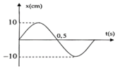

📋 Quy định làm bài
- Thời gian: 45 phút. Còn 10 phút hệ thống nhắc; hết giờ có thêm 5 phút gia hạn rồi tự động nộp.
- Bài làm ở chế độ toàn màn hình. Chuyển tab, mất focus, thoát toàn màn hình đều bị ghi nhận và báo cho giáo viên.
- Không dùng chuột phải, sao chép/dán, phím tắt. Trợ lý AI chỉ mở sau khi nộp bài. Phần tự luận: AI gợi ý điểm, giáo viên duyệt điểm chính thức.
PHẦN I. Câu trắc nghiệm nhiều phương án lựa chọn
Mỗi câu có 4 phương án, chỉ chọn một đáp án đúng (0,25 điểm).
1
Một vật dao động điều hòa với phương trình $x=10\cos\left(5\pi t+\frac{\pi}{3}\right)\ cm$. Xác định vận tốc của vật tại thời điểm $t=0,5$ (s).
2
Một vật nhỏ dao động điều hòa với chu kì $T=2$ s. Khi vật cách vị trí cân bằng một khoảng 5 cm thì vật có vận tốc là $12\pi$ cm/s. Chọn mốc thời gian khi vật qua vị trí cân bằng theo chiều âm. Phương trình dao động của vật là
3
Một vật dao động điều hòa theo phương trình $x=A\cos(\omega t+\varphi)$ với $A,\omega,\varphi$ là hằng số thì pha của dao động
4
Trong phương trình dao động điều hòa $x=A\cos(\omega t+\varphi)$, radian (rad) là thứ nguyên của đại lượng
5
Dao động điều hòa có vận tốc cực đại là $v_{max}=8\pi$ cm/s và gia tốc cực đại $a_{max}=16\pi^2$ cm/s² thì tần số góc của dao động là
6
Một vật dao động điều hòa, khi vật đi qua vị trí cân bằng thì
7
Vận tốc trong dao động điều hòa có độ lớn cực đại khi
8
Một chất điểm dao động điều hòa trên trục Ox theo phương trình $x=2\pi\cos(2\pi t+1,5\pi)$ cm, với t là thời gian. Pha ban đầu của dao động là
9
Một vật dao động điều hòa trên trục Ox quanh vị trí cân bằng O. Vectơ gia tốc của vật
10
Một vật nhỏ dao động điều hòa với li độ $x=10\cos(\pi t+\pi/6)$ (x tính bằng cm, t tính bằng s). Lấy $\pi^2=10$. Vận tốc của vật có độ lớn cực đại là
11
Dao động điều hòa có thể được coi như hình chiếu của một chuyển động tròn đều xuống một
12
Vật dao động điều hòa theo trục Ox . Phát biểu nào sau đây đúng?
13
Một vật dao động điều hòa theo phương trình $x=-5\sin(5\pi t-\pi/6)$ cm. Biên độ dao động và pha ban đầu của vật là
14
Một vật dao động điều hoà theo phương trình $x=4\cos\left(8\pi t+\frac{\pi}{6}\right)$, với x tính bằng cm, t tính bằng s. Tần số dao động của vật là
15
Một vật dao động điều hòa trên trục Ox. Hình bên là đồ thị biểu diễn sự phụ thuộc của li độ x vào thời gian t. Tần số góc của dao động là

16
Một vật dao động điều hòa theo phương trình $x=3\cos\left(\pi t+\frac{\pi}{2}\right)$ cm, pha dao động tại thời điểm $t=0,5$ (s) là
17
Một con lắc lò xo gồm vật nhỏ và lò xo nhẹ có độ cứng k, đang dao động điều hòa. Mốc thế năng tại VTCB. Biểu thức thế năng của con lắc ở li độ x là:
18
Chu kì dao động là
PHẦN II. Câu trắc nghiệm đúng sai
Trong mỗi ý a), b), c), d) chọn Đúng hoặc Sai. Đúng 1 ý: 0,1 · 2 ý: 0,25 · 3 ý: 0,5 · 4 ý: 1,0 điểm.
1
Một chất điểm dao động có phương trình $x=5\cos(4\pi t-\pi/6)$ (x tính bằng cm; t tính bằng giây).
a) Chiều dài quỹ đạo dao động là 5 cm.
b) Tốc độ cực đại của chất điểm là 62,83 cm/s.
c) Gia tốc của chất điểm có độ lớn cực đại là 197,39 cm/s².
d) Tần số của dao động là 2 Hz.
2
Cho vật dao động điều hoà có đồ thị như hình vẽ.

a) Biên độ dao động là 20 cm.
b) Tần số của dao động là 2,5 Hz.
c) Phương trình dao động là $x=20\cos(2,5\pi t-\pi)$ cm.
d) Vận tốc của vật khi có li độ -10 cm là $\pm25\pi\sqrt{3}$ cm/s.
3
Tại thời điểm t thì li độ và vận tốc của vật dao động điều hòa có giá trị ($x<0$ và $v<0$), khi đó
a) Vật đang chuyển động nhanh dần theo chiều dương.
b) Vật đang chuyển động nhanh dần về VTCB.
c) Vật đang chuyển động chậm dần theo chiều âm.
d) Vật đang chuyển động chậm dần về biên.
4
Một vật khối lượng $1$ kg dao động với phương trình $x=6\cos\left(4\pi t-\frac{\pi}{6}\right)$ cm (t tính bằng s). Lấy $\pi^2=10$.
a) Phương trình vận tốc của vật là $v=-24\pi\sin\left(4\pi t+\frac{\pi}{6}\right)$ cm/s.
b) Khi vật ở li độ $x=3$ cm thì vận tốc của vật có độ lớn là $12\pi\sqrt{3}$ cm/s.
c) Gia tốc của vật tại thời điểm $t=2$ s là $32\pi^{2}$ cm/s².
d) Khi vật có vận tốc $v=12\pi\sqrt{3}$ cm/s thì thế năng của vật có giá trị 0,072 J.
PHẦN III. Câu trắc nghiệm trả lời ngắn
Điền đáp số (có thể dùng dấu phẩy hoặc dấu chấm thập phân). Mỗi câu 0,25 điểm.
1
Một chất điểm dao động điều hòa trên quỹ đạo MN = 20 cm, biên độ dao động là bao nhiêu cm?
cm
2
Một vật dao động điều hòa theo trục Ox, trong khoảng thời gian 60 giây vật thực hiện được 120 dao động. Khi đó chu kì của vật có giá trị bao nhiêu giây?
s
3
Một chất điểm M chuyển động tròn đều trên quỹ đạo tâm O bán kính 8 cm với tốc độ v. Hình chiếu của điểm M trên trục Ox nằm trong mặt phẳng quỹ đạo dao động điều hòa với tần số góc 5 (rad/s). Giá trị của v là bao nhiêu cm/s?
cm/s
4
Một dao động điều hòa khi có li độ $x_1=1$ cm thì vận tốc $v_1=4\pi\sqrt3$ cm/s, khi có li độ $x_2=\sqrt2$ cm thì có vận tốc $v_2=4\pi\sqrt2$ cm/s. Biên độ của vật dao động có giá trị bao nhiêu cm?
cm
5
Đồ thị dao động điều hòa của một vật như hình vẽ. Tần số của vật dao động điều hòa có giá trị bao nhiêu Hz?

Hz
6
Một vật dao động điều hòa với chu kì T = 3,14 (s). Pha dao động của vật khi nó qua vị trí x = 2 cm với vận tốc $v=-0,04$ m/s là bao nhiêu độ?
độ